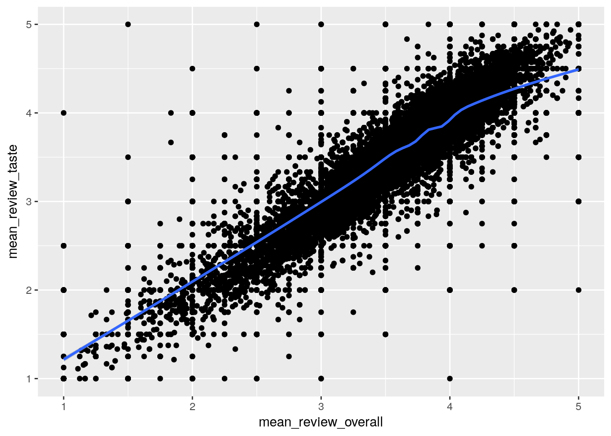
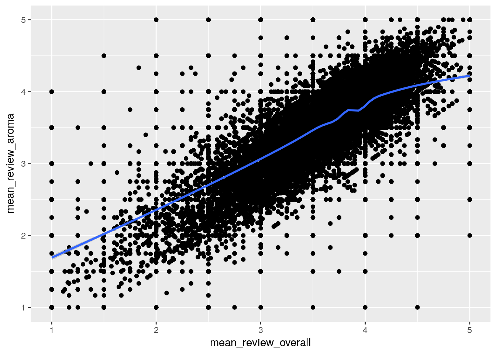

Introduction
library(corrplot)
library(glue)
library(Hmisc)
library(knitr)
library(skimr)
library(tidyverse)Data Download
Data courtesy of Beer Advocate.
#' Path to download csv
file_name <- "beer_reviews"
#' Compress data file
compress <- TRUE
local_path <- glue("../../../static/data/{file_name}.RData")
if (file.exists(local_path)) {
load(local_path)
} else {
df <- readr::read_csv(glue("https://github.com/timtrice/datasets/",
"blob/master/beer_reviews/{file_name}.csv",
"?raw=true"))
save(df, file = local_path, compress = compress)
}The Variables
skim(df)## Skim summary statistics
## n obs: 1586614
## n variables: 13
##
## Variable type: character
## variable missing complete n min max empty n_unique
## 1 beer_name 0 1586614 1586614 1 75 0 56857
## 2 beer_style 0 1586614 1586614 4 35 0 104
## 3 brewery_name 15 1586599 1586614 3 66 0 5742
## 4 review_profilename 348 1586266 1586614 3 16 0 33387
##
## Variable type: integer
## variable missing complete n mean sd min
## 1 beer_beerid 0 1586614 1586614 21712.79 21818.34 3
## 2 brewery_id 0 1586614 1586614 3130.1 5578.1 1
## 3 review_time 0 1586614 1586614 1.2e+09 7.7e+07 840672001
## p25 median p75 max hist
## 1 1717 13906 39441 77317 ▇▂▂▂▂▂▁▁
## 2 143 429 2372 28003 ▇▁▁▁▁▁▁▁
## 3 1.2e+09 1.2e+09 1.3e+09 1326285348 ▁▁▁▂▂▃▆▇
##
## Variable type: numeric
## variable missing complete n mean sd min p25 median p75
## 1 beer_abv 67785 1518829 1586614 7.04 2.32 0.01 5.2 6.5 8.5
## 2 review_appearance 0 1586614 1586614 3.84 0.62 0 3.5 4 4
## 3 review_aroma 0 1586614 1586614 3.74 0.7 1 3.5 4 4
## 4 review_overall 0 1586614 1586614 3.82 0.72 0 3.5 4 4.5
## 5 review_palate 0 1586614 1586614 3.74 0.68 1 3.5 4 4
## 6 review_taste 0 1586614 1586614 3.79 0.73 1 3.5 4 4.5
## max hist
## 1 57.7 ▇▅▁▁▁▁▁▁
## 2 5 ▁▁▁▁▂▃▇▅
## 3 5 ▁▁▁▃▅▇▃▁
## 4 5 ▁▁▁▁▂▅▇▆
## 5 5 ▁▁▁▃▅▇▃▁
## 6 5 ▁▁▁▂▅▇▅▁head(df) %>%
kable(caption = "head(df)")| brewery_id | brewery_name | review_time | review_overall | review_aroma | review_appearance | review_profilename | beer_style | review_palate | review_taste | beer_name | beer_abv | beer_beerid |
|---|---|---|---|---|---|---|---|---|---|---|---|---|
| 10325 | Vecchio Birraio | 1234817823 | 1.5 | 2.0 | 2.5 | stcules | Hefeweizen | 1.5 | 1.5 | Sausa Weizen | 5.0 | 47986 |
| 10325 | Vecchio Birraio | 1235915097 | 3.0 | 2.5 | 3.0 | stcules | English Strong Ale | 3.0 | 3.0 | Red Moon | 6.2 | 48213 |
| 10325 | Vecchio Birraio | 1235916604 | 3.0 | 2.5 | 3.0 | stcules | Foreign / Export Stout | 3.0 | 3.0 | Black Horse Black Beer | 6.5 | 48215 |
| 10325 | Vecchio Birraio | 1234725145 | 3.0 | 3.0 | 3.5 | stcules | German Pilsener | 2.5 | 3.0 | Sausa Pils | 5.0 | 47969 |
| 1075 | Caldera Brewing Company | 1293735206 | 4.0 | 4.5 | 4.0 | johnmichaelsen | American Double / Imperial IPA | 4.0 | 4.5 | Cauldron DIPA | 7.7 | 64883 |
| 1075 | Caldera Brewing Company | 1325524659 | 3.0 | 3.5 | 3.5 | oline73 | Herbed / Spiced Beer | 3.0 | 3.5 | Caldera Ginger Beer | 4.7 | 52159 |
Categorical
brewery_namereview_overallreview_aromareview_appearancereview_profilenamebeer_stylereview_palatereview_tastebeer_name
Continuous
brewery_idreview_timebeer_abvbeer_beerid
Exploratory
cc <- df[complete.cases(df),] %>%
select(starts_with("review"), -review_time, -review_profilename, beer_abv)cor(cc)## review_overall review_aroma review_appearance
## review_overall 1.0000000 0.6127926 0.4985565
## review_aroma 0.6127926 1.0000000 0.5590771
## review_appearance 0.4985565 0.5590771 1.0000000
## review_palate 0.6990197 0.6149238 0.5645551
## review_taste 0.7871712 0.7147773 0.5445794
## beer_abv 0.1384574 0.3325362 0.2638906
## review_palate review_taste beer_abv
## review_overall 0.6990197 0.7871712 0.1384574
## review_aroma 0.6149238 0.7147773 0.3325362
## review_appearance 0.5645551 0.5445794 0.2638906
## review_palate 1.0000000 0.7322005 0.2866673
## review_taste 0.7322005 1.0000000 0.2907817
## beer_abv 0.2866673 0.2907817 1.0000000Most positive relationship seems to be between review_overall and review_taste. I want to take the mean review_overall and review_taste per beer_beerid and draw a scatterplot.
df %>%
group_by(beer_beerid) %>%
summarise(mean_review_overall = mean(review_overall, na.rm = TRUE),
mean_review_taste = mean(review_taste, na.rm = TRUE)) %>%
ggplot(aes(x = mean_review_overall, y = mean_review_taste)) +
geom_point() +
geom_smooth()## `geom_smooth()` using method = 'gam'## Warning in seq.default(0, 1, length = nk): partial argument match of
## 'length' to 'length.out'## Warning in model.matrix.default(Terms[[i]], mf, contrasts = object
## $contrasts): partial argument match of 'contrasts' to 'contrasts.arg'
Is this really surprising?
Next to taste is review_palate; let’s check that out.
df %>%
group_by(beer_beerid) %>%
summarise(mean_review_overall = mean(review_overall, na.rm = TRUE),
mean_review_aroma = mean(review_aroma, na.rm = TRUE)) %>%
ggplot(aes(x = mean_review_overall, y = mean_review_aroma)) +
geom_point() +
geom_smooth()## `geom_smooth()` using method = 'gam'## Warning in seq.default(0, 1, length = nk): partial argument match of
## 'length' to 'length.out'## Warning in model.matrix.default(Terms[[i]], mf, contrasts = object
## $contrasts): partial argument match of 'contrasts' to 'contrasts.arg'
I’m curious what type of
df %>%
select(beer_beerid, review_overall, review_aroma, review_taste) %>%
mutate(
review_class = case_when(
review_overall < 1 ~ "A",
review_overall < 2 ~ "B",
review_overall < 3 ~ "C",
review_overall < 4 ~ "D",
TRUE ~ "E")) %>%
group_by(beer_beerid) %>%
summarise(mean_review_aroma = mean(review_aroma, na.rm = TRUE)) %>%
ggplot(aes(x = review_class, y = mean_review_aroma)) %>%
geom_boxplot()## Error: Mapping must be created by `aes()` or `aes_()`R Session Info
pander::pander(sessionInfo())R version 3.4.3 (2017-11-30)
**Platform:** x86_64-pc-linux-gnu (64-bit)
locale: LC_CTYPE=en_US.UTF-8, LC_NUMERIC=C, LC_TIME=en_US.UTF-8, LC_COLLATE=en_US.UTF-8, LC_MONETARY=en_US.UTF-8, LC_MESSAGES=C, LC_PAPER=en_US.UTF-8, LC_NAME=C, LC_ADDRESS=C, LC_TELEPHONE=C, LC_MEASUREMENT=en_US.UTF-8 and LC_IDENTIFICATION=C
attached base packages: methods, stats, graphics, grDevices, utils, datasets and base
other attached packages: bindrcpp(v.0.2), forcats(v.0.2.0), stringr(v.1.2.0), dplyr(v.0.7.4), purrr(v.0.2.4), readr(v.1.1.1), tidyr(v.0.8.0), tibble(v.1.4.2), tidyverse(v.1.2.1), skimr(v.1.0), knitr(v.1.18), Hmisc(v.4.0-3), ggplot2(v.2.2.1), Formula(v.1.2-2), survival(v.2.41-3), lattice(v.0.20-35), glue(v.1.2.0) and corrplot(v.0.84)
loaded via a namespace (and not attached): httr(v.1.3.1), jsonlite(v.1.5), splines(v.3.4.3), modelr(v.0.1.1), assertthat(v.0.2.0), highr(v.0.6), latticeExtra(v.0.6-28), pander(v.0.6.1), cellranger(v.1.1.0), yaml(v.2.1.16), pillar(v.1.1.0), backports(v.1.1.2), digest(v.0.6.15), RColorBrewer(v.1.1-2), checkmate(v.1.8.5), rvest(v.0.3.2), colorspace(v.1.3-2), htmltools(v.0.3.6), Matrix(v.1.2-12), plyr(v.1.8.4), psych(v.1.7.8), pkgconfig(v.2.0.1), broom(v.0.4.3), haven(v.1.1.1), bookdown(v.0.5), scales(v.0.5.0), htmlTable(v.1.11.2), mgcv(v.1.8-23), nnet(v.7.3-12), lazyeval(v.0.2.1), cli(v.1.0.0), mnormt(v.1.5-5), crayon(v.1.3.4), magrittr(v.1.5), readxl(v.1.0.0), evaluate(v.0.10.1), nlme(v.3.1-131), xml2(v.1.2.0), foreign(v.0.8-69), blogdown(v.0.4), tools(v.3.4.3), data.table(v.1.10.4-3), hms(v.0.4.1), munsell(v.0.4.3), cluster(v.2.0.6), compiler(v.3.4.3), rlang(v.0.1.6), grid(v.3.4.3), rstudioapi(v.0.7), htmlwidgets(v.1.0), labeling(v.0.3), base64enc(v.0.1-3), rmarkdown(v.1.8), gtable(v.0.2.0), reshape2(v.1.4.3), R6(v.2.2.2), gridExtra(v.2.3), lubridate(v.1.7.1), bindr(v.0.1), rprojroot(v.1.3-2), stringi(v.1.1.6), parallel(v.3.4.3), Rcpp(v.0.12.15), rpart(v.4.1-12), acepack(v.1.4.1) and tidyselect(v.0.2.3)